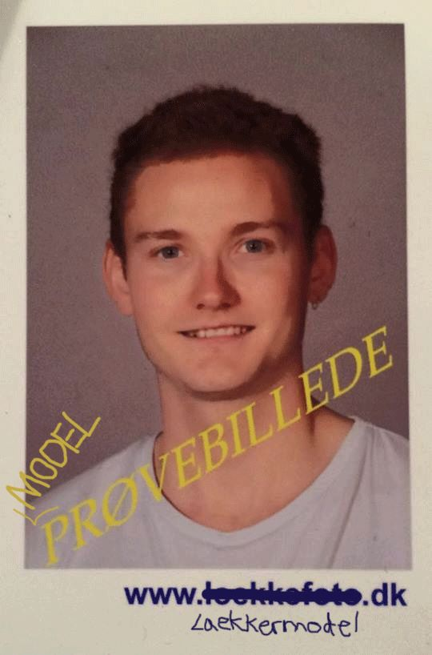

Jeg har igennem de sidste 3 år arbejdet som kok i forskellige køkkener. Bla i Berlin. Jeg elsker rødvin, god mad, musik og godt selvskab.
Jeg har valgt Multimedie Design fordi jeg er overbevist om, at kodning er et af de bedste sprog man kan lære. Og så hjælper det også at jeg er æstetisk anlagt og har en forkærlighed for plakater, pladecovers og fotografi.
Jeg har gennemført 57% af grundkurset i JavaScript på Codecademy, men helt ny i både HTML og CSS
